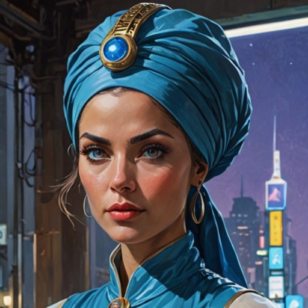
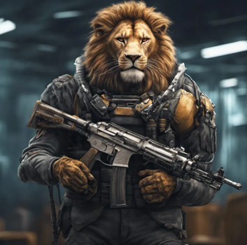
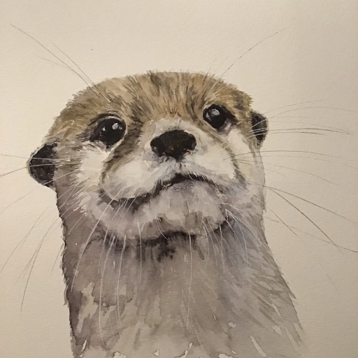

Lucius Vin Geitenhoven

Background
A Solomani scholar and astrogator, Lucius brings academic expertise and diplomatic skills to the crew. His knowledge of ancient civilizations and languages has proven invaluable in their archaeological investigations.
Skills & Abilities
- Astrogation (Expert)
- Diplomacy (Advanced)
- Archaeology (Advanced)
- Xenolinguistics (Advanced)
- History (Expert)
Equipment
- Advanced Astrogation Computer
- Archaeological Toolkit
- Universal Translator
- Diplomatic Credentials
Quinstebr
Background
The ship's owner and primary medic, Quin is a Zhodani with extensive medical training. Their leadership skills and medical expertise make them a crucial member of the crew.
Skills & Abilities
- Medicine (Expert)
- Leadership (Advanced)
- Gunnery (Advanced)
- Ship Command (Advanced)
- First Aid (Expert)
Equipment
- Medical Kit
- Ship's Medical Bay
- Command Console
- Combat Medical Gear
Khyelyeweih Yahfoi
Background
An Aslan pilot with a background in naval tactics, Khyel brings exceptional flying skills and combat experience to the crew. Their knowledge of ship operations and navigation is invaluable.
Skills & Abilities
- Piloting (Expert)
- Naval Tactics (Expert)
- Combat (Advanced)
- Ship Operations (Expert)
- Navigation (Advanced)
Equipment
- Flight Suit
- Combat Gear
- Navigation Computer
- Tactical Display
Awang-Vappu
Background
A Gurvin specialist in robotics and remote operations, Awang-Vappu's technical expertise and financial acumen make them a valuable asset to the crew. Their ability to operate and maintain various robotic systems is crucial for their missions.
Skills & Abilities
- Robotics (Expert)
- Remote Operations (Expert)
- Finance (Advanced)
- Computer Systems (Advanced)
- Drone Operations (Expert)
Equipment
- Remote Control Systems
- Drone Fleet
- Financial Terminal
- Technical Toolkit